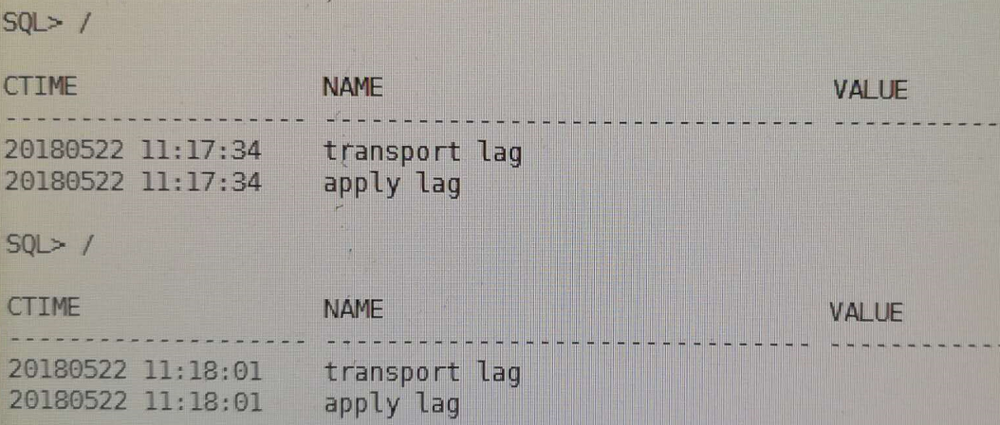
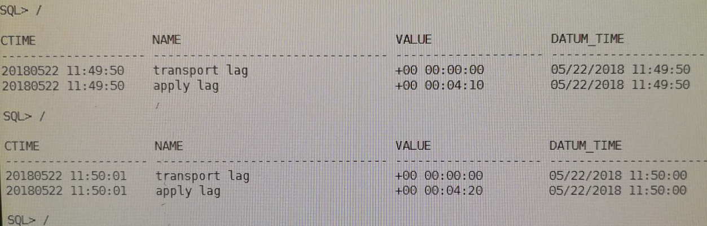
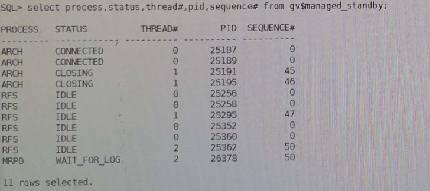
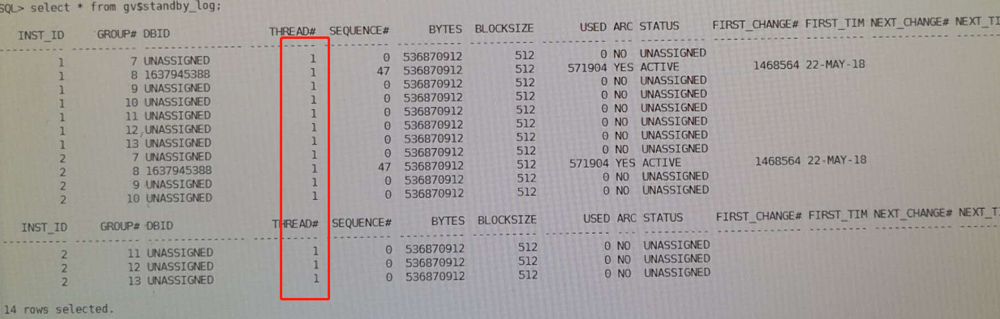

一、环境说明
- 主备库均为11gRAC（11.2.0.4）
- 主库为生产环境，同一个数据库上部署了多套实例，故而不能启停监听
- 主备库创建时采用的是policy managed，三个实例其中两个被使用
- 备库因为是RAC环境，为了简化后期的操作步骤，已经在备库创建好了同主库数据库名一致的实例。创建实例时指定db_name、db_unique_name、service_name。在配置过程中只是删除物理文件，其他资源保留。
- 主库的数据文件磁盘组为ORADATA，备库的数据文件磁盘组为DATA
- 基于以上，用最传统是方式进行手工配置
主库
192.168.2.220 lowa1
192.168.2.222 lowa2
196.168.2.227 lowa3
196.168.2.229 pri-scan-ip
备库
192.168.66.30 nazeebo1
192.168.66.32 nazeebo2
192.168.66.34 nazeebo3
192.168.66.36 st-scan-ip
vip 和 private ip习惯性忽略
数据库db_name：jwdlh，主库和备库的db_name一定要相同 db_unique_name：jwdlhdg，主库和备库的db_unique_name一定要设置成不一样 service_name：jwdlh，建议主库和备库设置成一样 数据文件路径：+DATA 归档路径：+ARCH
二、主备库网络相关过程
1.配置tnsnames
和所有的配置类似，主备库各自在tnsnames.ora中添加对应的tnsname
主库：
jwdlh_pri =
(DESCRIPTION =
(ADDRESS = (PROTOCOL = TCP)(HOST = 192.168.2.229)(PORT = 11521))
(CONNECT_DATA =
(SERVER = DEDICATED)
(SERVICE_NAME = jwdlh)
)
)
备库：
jwdlh_st =
(DESCRIPTION =
(ADDRESS = (PROTOCOL = TCP)(HOST = 192.168.66.36)(PORT = 11521))
(CONNECT_DATA =
(SERVER = DEDICATED)
(SERVICE_NAME = jwdlh)
)
)
2.配置监听
因为主库所在的主机上面有其他实例，所以监听不能重启，故而本文采用的方案为动态监听
3.测试
在主备库两端各节点执行如下命令：
tnsping jwdlh_pri
tnsping jwdlh_st
若以上均连接正常，则ok。否则进行troubleshooting，直至网络连接正常。
三、主库配置
1..确认主库为归档模式
archive log list;
如果不是归档模式，那么可以首先将数据库启动到MOUNT状态，然后执行：
ALTER DATABASE ARCHIVELOG
2.将主库置为Force Logging 模式，在一个节点操作即可
SELECT FORCE_LOGGING FROM V$DATABASE ;
ALTER DATABASE FORCE LOGGING;
3.打开最小补充日志
alter database add supplemental log data ;
select supplemental_log_data_min min from v$database ;
4.配置主库的初始化参数，在一个节点操作即可
alter system set fal_client='jwdlh_pri' ;
alter system set fal_server='jwdlh_st' ;
alter system set log_archive_dest_2='service=jwdlh_st lgwr async valid_for=(online_logfiles,primary_role) db_unique_name=jwdlhdg' ; --这里的db_unique_name设置为备库的
alter system set log_archive_dest_state_1='ENABLE';
alter system set log_archive_dest_state_2='ENABLE';
alter system set standby_file_management='AUTO';
alter system set db_file_name_convert='+DATA/jwdlhdg','+ORADATA/jwdlh','+ARCH/jwdlhdg','+ARCH/jwdlh' scope=spfile;
alter system set log_file_name_convert='+DATA/jwdlhdg','+ORADATA/jwdlh','+ARCH/jwdlhdg','+ARCH/jwdlh' scope=spfile;
5.创建standby redolog
推荐组数为(每线程的日志组数+1) X 最大线程数，大小和redo一致)：
alter database add standby logfile thread 1 group 7 ('+ORADATA','+ARCH') size 512M;
alter database add standby logfile thread 1 group 8 ('+ORADATA','+ARCH') size 512M;
alter database add standby logfile thread 1 group 9 ('+ORADATA','+ARCH') size 512M;
alter database add standby logfile thread 1 group 10 ('+ORADATA','+ARCH') size 512M;
alter database add standby logfile thread 1 group 11 ('+ORADATA','+ARCH') size 512M;
alter database add standby logfile thread 1 group 12 ('+ORADATA','+ARCH') size 512M;
alter database add standby logfile thread 1 group 13 ('+ORADATA','+ARCH') size 512M;
alter database add standby logfile thread 2 group 14 ('+ORADATA','+ARCH') size 512M;
alter database add standby logfile thread 2 group 15 ('+ORADATA','+ARCH') size 512M;
alter database add standby logfile thread 2 group 16 ('+ORADATA','+ARCH') size 512M;
alter database add standby logfile thread 2 group 17 ('+ORADATA','+ARCH') size 512M;
alter database add standby logfile thread 2 group 18 ('+ORADATA','+ARCH') size 512M;
alter database add standby logfile thread 2 group 19 ('+ORADATA','+ARCH') size 512M;
alter database add standby logfile thread 2 group 20 ('+ORADATA','+ARCH') size 512M;
6.传送密钥文件
用oracle用户传送密钥文件，在一个节点操作即可
scp $ORACLE_HOME/dbs/orapwjwdlh oracle@192.168.66.30:/u01/app/oracle/product/11.2.0/db/dbs/orapwjwdlhdg
scp $ORACLE_HOME/dbs/orapwjwdlh oracle@192.168.66.32:/u01/app/oracle/product/11.2.0/db/dbs/orapwjwdlhdg
scp $ORACLE_HOME/dbs/orapwjwdlh oracle@192.168.66.34:/u01/app/oracle/product/11.2.0/db/dbs/orapwjwdlhdg
四、备库配置过程
1.参数配置
alter system set fal_client='jwdlh_pri';
alter system set fal_server='jwdlh_st';
alter system set log_archive_dest_2='service=jwdlh_pri lgwr async valid_for=(online_logfiles,primary_role)
db_unique_name=jwdlh' ; --这里的db_unique_name设置为主库的
alter system set log_archive_dest_state_1='ENABLE';
alter system set log_archive_dest_state_2='DEFER';
alter system set standby_file_management='AUTO';
alter system set db_file_name_convert='+ORADATA/jwdlh','+DATA/jwdlhdg','+ARCH/jwdlh','+ARCH/jwdlhdg' scope=spfile;
alter system set log_file_name_convert='+ORADATA/jwdlh','+DATA/jwdlhdg','+ARCH/jwdlh','+ARCH/jwdlhdg' scope=spfile;
2.备库删除文件
由于备库当前已经创建了jwdlhdg的数据库，为了避免后期的各种服务注册，利用已经存在的jwdlhdg数据库，只是删除物理文件，其他资源保留。
srvctl stop database -d jwdlhdg
asmcmd
ASMCMD>cd +data/jwdlhdg
ASMCMD>rm -rf datafile
ASMCMD>rm -rf controlfile
ASMCMD>rm -rf tempfile
ASMCMD>rm -rf archivelog
ASMCMD>rm -rf onlinelog
千万注意不要把里面的spfilexxx.ora给删除了！ 因为里面记录了之前备库所有的修改的初始化参数的信息。
五、主库备份
1.主库备份数据和归档文件
rman target /
rman> sql' alter system archive log current';
RMAN> backup database format '/home/oracle/temp/full_%U';
RMAN> sql' alter system archive log current';
RMAN> backup archivelog all format '/home/oracle/temp/arch_%U';
2.主库备份成standby控制文件
SQL>alter database create standby controlfile as '/home/oracle/temp/standby.ctl';
传送文件至备库其中一个节点
scp * oracle@192.168.66.30:/home/oracle/temp/
六、备库还原
在刚刚上传了文件的节点上操作即可 备库的操作顺序请注意！！！
1.restore 数据库
export ORACLE_SID=jwdlhdg_1
rman target /
RMAN>startup nomount
RMAN>restore controlfile from '/home/oracle/temp/standby.ctl';
RMAN>alter database mount;
RMAN>restore database;
2.关闭备库启动到mount standby
SQL>shutdown immediate;
SQL>startup nomount;
SQL>alter database mount standby database;
rman target /
RMAN>recover database;
3.打开数据库
SQL>alter database open;
七、备库操作
1.设置为实时应用主库日志
SQL> alter database recover managed standby database using current logfile disconnect from session;
2.启动另外一个节点
grid$ srvctl start instance -d jwdlhdg -i jwdlhdg_2
在这个过程，会自动生成inst_2的redo和standby redo log
八、测试
在主库进行测试表的创建，看在备库上是否能实时看到。
九、部署过程中遇到的问题与解决办法
1.一个备库也是RAC环境的经验
备库如果也是RAC的话，为了简化后期的操作步骤，可以在备库创建好了同主库数据库名一致的实例。创建实例时指定db_name、db_unique_name、service_name。在配置过程中只是删除物理文件，其他资源保留。 备库的所有操作只需要启动一个实例进行操作即可，都执行完成且没有问题后，用grid用户去将第二个实例启动起来即可
2.在备库alter database open时，提示缺少某些日志
解决方法：
在主库执行：
SELECT THREAD#, MAX (SEQUENCE#) AS "LAST_APPLIED_LOG" FROM GV$LOG_HISTORY GROUP BY THREAD#;
1 12
2 15
在备库执行：
SELECT THREAD#, MAX (SEQUENCE#) AS "LAST_APPLIED_LOG" FROM GV$LOG_HISTORY GROUP BY THREAD#;
1 10
2 13
出现上述的情况时，需要手动将主库thread 1线程的10到12号和thread 2线程的13-15号日志复制到备库，可以参考以下方法，主库使用grid操作：
grid$ asmcmd
ASMCMD>cd +arch/jwdlh/archivelog
ASMCMD>cp thread_1_12_376279112.log /home/oracle/temp
ASMCMD>依次将所有缺少的日志复制出来
将复制出来的日志上传至备库
scp *.log oracle@192.168.66.30:/home/oracle/temp/
备库上进行以下操作
SQL>ALTER DATABASE REGISTER LOGFILE '/home/oracle/temp/thread_1_12_376279112.log';
依次将缺少的日志注册进来，在open备库
SQL>alter database open;
3.备库可以启动并打开，但无法接受主库的日志
select status,error from v$archive_dest where dest_name='LOG_ARCHIVE_DEST_2';
查看报错信息，根据提示解决问题，直到status值为VALID
如：ORA-16047: 目标设置和备用之间的 DGID 不匹配；
看主库log_archive_dest_2参数设置，db_unique_name属性和standby的初始化参数db_unique_name是否一致
查看备库的log_archive_config有没有设置
如：ORA-16191: Primary log shipping client not logged on standby
查看这个参数remote_login_passwordfile是否为EXCLUSIVE；
确认备库的密码文件是否来自主库，可以尝试重新将主库的密码文件传送到备库
4.第一次配置的时候，发现每次要在主库切一次日志，备库才能同步过去
用以下命令查看
set lines 200
col ctime format a20
col value format a20
select inst_id,to_char(sysdate,'yyyymmdd hh24:mi:ss') ctime,name,value,datum_time from gv$dataguard_stats where name like '%lag';
第一次发现没有lag

在主库重新执行一次alter system archive log current; 后，发现有了lag

接着查mrp进程，进程是有的：  接着去看standby redo log，发现了问题：  观察上图的结果，发现standby redo log全部都是线程1的，赶紧通过命令把thread 2的standby log补上，过了一会儿就同步了。
类似命令：
alter database add standby logfile thread 2 group 14 ('+ORADATA','+ARCH') size 512M;
alter database add standby logfile thread 2 group 15 ('+ORADATA','+ARCH') size 512M;
alter database add standby logfile thread 2 group 16 ('+ORADATA','+ARCH') size 512M;
alter database add standby logfile thread 2 group 17 ('+ORADATA','+ARCH') size 512M;
alter database add standby logfile thread 2 group 18 ('+ORADATA','+ARCH') size 512M;
alter database add standby logfile thread 2 group 19 ('+ORADATA','+ARCH') size 512M;
alter database add standby logfile thread 2 group 20 ('+ORADATA','+ARCH') size 512M;
5.当归档无法传递时，可在主库尝试执行（这样可达到重新连接的目的）
ALTER SYSTEM SET LOG_ARCHIVE_DEST_STATE_2=defer;
ALTER SYSTEM SET LOG_ARCHIVE_DEST_STATE_2=ENABLE;
十、常用命令
---查看备库缺少的归档日志，备库上查看
select thread#, low_sequence#, high_sequence# from gv$archive_gap;
--手动切换日志
alter system switch logfile;
--每个实例的日志都切换
alter system archive log current；
--延迟10分钟应用归档
alter database recover managed standby database delay 10 disconnect from session;
--取消延迟
alter database recover managed standby database nodelay disconnect from session;
--使用standby redolog应用日志，这样可以实时接受主库日志
alter database recover managed standby database using current logfile disconnect from session;
--取消日志应用
alter database recover managed standby database cancel;
--使用归档日志应用日志，这种方式为10g的方式，只能等主库日志切换时才可以接受并应用主库的归档日志
alter database recover managed standby database disconnect from session;
--查看主库归档传送和应用情况
select dest_name,archived_thread#,archived_seq#, applied_thread#,applied_seq#, db_unique_name from gv$archive_dest_status where status= 'valid';
--查看主备库的日志的应用情况是否一致
select thread#, max (sequence#) as "last_applied_log" from gv$log_history group by thread#;
--查看dg各进程信息
select process,status,thread#,pid,sequence# from gv$managed_standby;
--查看standby日志状态
select * from gv$standby_log;
--在备库上查看日志传递和应用是否有lag
set lines 200
col ctime format a20
col value format a20
select inst_id,to_char(sysdate,'yyyymmdd hh24:mi:ss') ctime,name,value,datum_time from gv$dataguard_stats where name like '%lag';